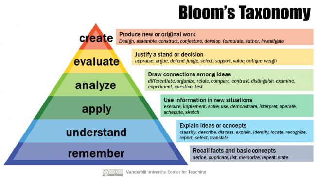

Andrew Nolan's Blog
Andrew's Blog


Andrew Nolan
4/17/2023
It is weird to think ChatGPT hasn't even been around for half a year. When it was released, it felt like a fun toy. People were doing cool things with it and getting around its restrictions. But it seemed like a precursor of the future. The prevailing thoughts seemed to be along the lines of "Yeah, ChatGPT is cool, but imagine what AI will be like in a few years?"
But as we used it more, its impact became more clear. ChatGPT wasn't foreshadowing changes to come, it was the changes. People in all industries have been adapting ever since. The education space is no exception.
Primary education is an oftentimes underfunded, overworked, and unfairly criticized industry. Teachers are heroes and are incredibly important. But because of the challenges that they face, they are often one of the later groups to pick up on new technical trends. It's hard to find time to redefine curriculums that have been working for decades. Especially in recent years with increased ties to state mandated testing and objectives.
However, sometimes technology comes along that sheds light on the way things are done and urges for change. ChatGPT has done this. After its release there was a slew of fears pervading the space, including bans from large school districts across the country from New York to LA.
Jenna Lyle, a spokeswoman for the New York City Department of Education captured this sentiment well, "While the tool may be able to provide quick and easy answers to questions, it does not build critical-thinking and problem-solving skills, which are essential for academic and lifelong success."
A machine that can write essays like a human! Cheating was in for a whole new level.
As time went on, it turned out this wasn't quite true. The recent survey from the Walton Foundation of 1000 students and educators (discussed in my previous blog) showed that cheating is low. In fact, teachers and students thought ChatGPT will improve learning (68% of students and 75% of teachers)! Not only that, but both groups also thought ChatGPT was shedding light on how K-12 education needs to adapt to the changing times (63% of students and 72% of teachers).
It turns out Large Language Models, similar to the calculator or google or wikipedia or many technologies before them, are not hurting students. They will actually help them. The new question that researchers will be investigating is how to make that happen?
A recent article by Will Douglas Heaven, Chief AI Editor for the MIT Tech Review, titled "ChatGPT will Change not Destroy Education," discusses this topic with quotes from teachers adapting to the technology today. I think highlighting the voices of educators on this topic is important, so I am going to share some of those quotes here.
It feels kind of like a meta-blog to write a blog about an internet article like this, but that's what I'm planning to do! If you'd rather read the original article you can check it out here. Otherwise, stick around and we'll dive into it a bit!
The first thing ChatGPT and other AIs are doing is exposing that current assessment systems may not be the best. Richard Culatta, CEO of the International Society for Technology in Education says "did ChatGPT kill assessments? They were probably already dead, and they've been in zombie mode for a long time. What ChatGPT did was call us out on that."
A lot of tests, quizzes, and other gradable materials are based on measuring a student's understanding of a topic. While this has been an easy way to measure memory, it does not work for all learners. And what's more, ChatGPT is a master at answering understanding-based questions. This is what is sparking a lot of those fears we saw earlier.
Luckily, this is not the first time people have thought about this. For decades (since the 50s), educators have known that understanding is only the base of learning. In the above image we can see Bloom's Taxonomy, a famous model for learning. The higher up you move in the pyramid the better your knowledge is. The hope is that these stronger forms of learning can be leveraged by ChatGPT. Rethinking assessments is just one way we can do this.
Some teachers are already taking steps to strengthen their students' learning by using new methods with ChatGPT.
Emily Donahoe, educational developer at University of Mississippi, began creating assignments in which students annotate and critique arguments generated by ChatGPT.
Similarly, Jessica Stansbury, director of teaching and learning excellence at the University of Baltimore, noticed the bias present in some of ChatGPT's responses. For example, when asking about the history of printing, the AI responded with a heavily US-centric answer ignoring historically important roles of China and Europe. Using this for a starting point for discussions about bias, she says "it's a great way to focus on media literacy."
Helen Crompton, an associate professor of instructional technology at Old Dominion University, highlights the use of ChatGPT for more interactivity in the classroom. Having ChatGPT role play and serving as a partner in debates has been a great way to expose opposing viewpoints and identify weaknesses in students' own arguments.
Another important learning opportunity that arises from the rise of GPT is prompt engineering and learning to interact with the new AI tools. David Smith, a professor of bioscience education at Sheffield Hallam University, observes "[Students] don't want it to be vilified, they want to be taught how to use it."
Going back to the Walton survey, Smith's observation seems consistent with the positive views teachers and students hold towards the promise of this new technology.
These teachers are pioneers into the unknown of AI and education. I believe their ideas are brilliant and I am excited to see what other innovations come out of adapting to this new technology. I find any move upwards in Bloom's Taxonomy to be an improvement in learning. The chat based design of these generative AIs is really conducive to discussion and allows students the chance to analyze and evaluate.
Educators are luckily not alone in adapting to this new world. OpenAI is aware of the impacts of ChatGPT and offers guidance for teachers to use. You can read the whole doc here. A lot of it seems like it may be an evolving document as we learn more, but it is nice that there is something out there.
One sentence I find particularly useful from OpenAI's doc for education is this, "teachers should carefully review both the inputs and outputs, and should disclose where they have used or relied on an AI system." Leveraging both inputs and outputs when grading ChatGPT based assignments sounds very important and goes back to Smith's comments on students wanting to learn how to use the tools.
I think Emily Donahoe summarized the situation best with "this is still an ongoing experiment."
It's a whole new world. There are a lot of things happening rapidly, it can be overwhelming and scary. But if you ask me, it should be exciting! This is a chance to try new things and hopefully improve education for the better.
Enjoyed this article? Hoping for more AI blogs? Subscribe to the RSS Feed!